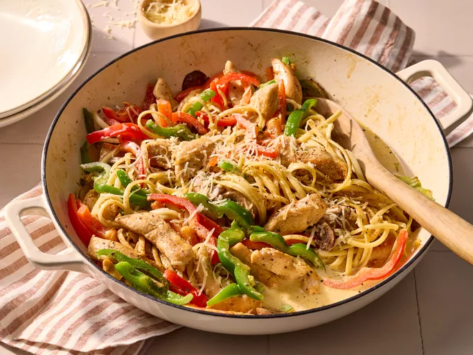

Home
Cajun Chicken Pasta

Description
This creamy Cajun chicken pasta with bell peppers and mushrooms is easy to make, full of spicy flavor, and ready to eat in 30 minutes. Perfect for busy weeknights!
Ingredients
- 4 ounces of pasta
- 2 skinless boneless chicken breasts
- 2 teaspoons Cajun seasoning
- 2 tablespoons butter
- 1 red bell pepper, slices
- 1 green bell pepper slices
- 4 fresh mushrooms, sliced
- 1 green onion, chopped
- 1 cup heavy cream
- 1/4 teaspoon dried basil
- 1/4 teaspoon lemon pepper
- 1/4 teaspoon salt
- 1/8 teaspoon garlic powder
- 1/8 teaspoon ground black pepper
- 1/4 cup grated parmesan cheese
Steps
- Bring a large pot of lightly salted water to a boil. Add pasta and cook until al-dente. Drain
- Cut chicken breasts into strips, place in a plastic bag. Add cajun seasoning and shake to coat chicken
- Melt butter in a large skillet over medium heat. Add chicken and cook, stirring until until browned and almost cooked through
- Add bell peppers, mushrooms and green onions. Cook, stirring, 2 to 3 minutes
- Reduce the heat and stir in cream, basil, lemon pepper, salt, garlic powder, and black pepper. Heat through and add cooked pasta, toss and heat through
- Sprinkle with parmesan and serve.